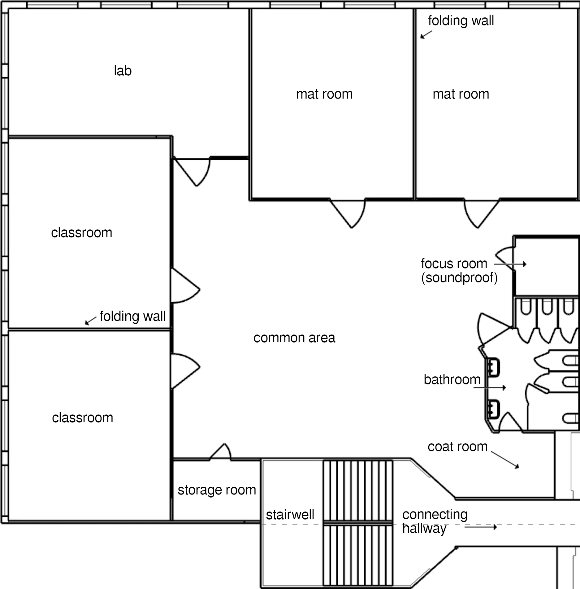
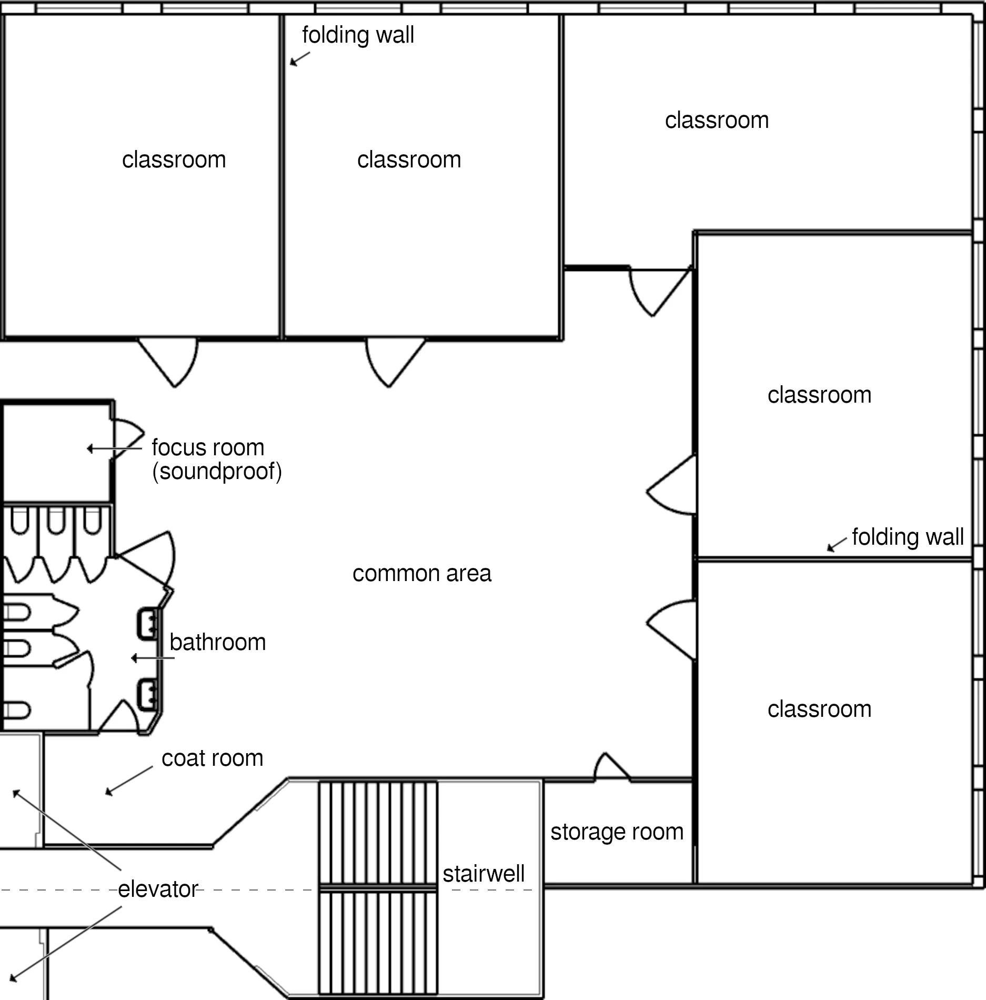
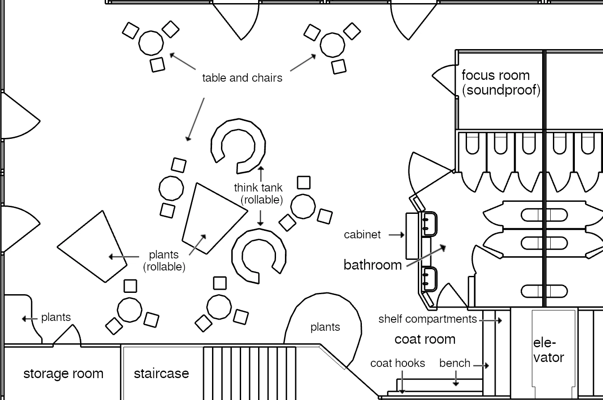

7. Education System
7.3 Level 1: Class and Teacher-Advisors
But let's go through this chronologically by increasing school years, to give structure to the explanation.
In my school system, I use the term “class” to refer to a group of 20 students who begin school together with two specific teachers. These two become the teacher-advisors of these students. They will eat together with their students, be their first points of contact in case of school-related or private problems, and in the first year, the children will only have module lessons and introduction with these two teachers.
There are five parallel classes; the child and their parents choose the class based on the foreign language the child is going to learn.
Variation by native language: If this futurity is implemented where English (the global language for communication across national borders) is the native language, parents and child choose the language the child will learn in addition to English, starting in the first year.
If the children's native language is a different one (such as German), then all children will learn English in their foreign-language classes from the first year.
From now on, I will mostly refer to “Level 1” rather than “first school year”. Similar to how today’s schools are divided into primary and secondary school, the school system I propose is also divided into different stages, which I will call “levels”. Level 1 typically lasts the first school year. However, it can end earlier or later for individual students.
For fitness and foreign language, the school year is decisive; for modules, introductions, and hobbies, the level (if I've successfully confused you—this should become clearer later in this chapter...).
The children start the first week of Level 1 directly with the module, at 10:15. This is the settling-in week, so school days are shorter.
In the module, the children learn to read, write, and do basic arithmetic.48
I don't want to go into detail about how they learn this. I lack the expertise to develop pedagogical teaching concepts, and this futurity isn't dependent on any particular method of knowledge transfer. This text focuses on presenting the school's organization and the surrounding conditions within which lessons take place.
These surrounding conditions include the technical resources available to the teachers. One important resource, relevant from the start of the first school year (=start of Level 1), is tablets. Each teaching team has a class set. Students can use the tablets in class to complete exercises. Teachers can install new applications on the tablets as needed.
The tablets are limited to a single application. School staff (not the teachers!) ensure that technical tools like these tablets function correctly. The teachers themselves can deploy the desired application to all the tablets in the class set with a single click.
What are the advantages of having tablets available as a teaching tool? Is there a benefit to that in Level 1?
• Children can practice learning content like reading and basic arithmetic on tablets, receiving immediate feedback on whether they've done it correctly (e.g., matching sounds to syllables). This feedback is essential for the brain to learn from mistakes. Even with a 10:1 student-to- teacher ratio, teachers simply cannot provide the same amount of it as a tablet can.
• Learning and practicing on tablets can be done in a playful way, thus increasing the children's motivation.
• If an application is improved, for example based on new scientific findings about the learning process, this new version is immediately available in all schools across the country.
Of course teachers receive further training to improve their teaching as well. Nevertheless, the standardized and effortless improvement of exercises across all schools is a significant advantage.
This doesn't mean that all lessons in the first school year take place on tablets—far from it! But the tablet is a powerful tool at the teachers' disposal. And it will find its place as one of several forms of exercise in the classroom.
The module is interrupted by a 60-minute lunch break (12:00–13:00). During this time, the two teachers go outside onto the school grounds with the children of their class. There, they have (like all teachers at the school) a fixed, covered seating area assigned to them and their students. This area includes a lockable cabinet. From it, the teachers distribute cups, dishes, and cutlery, and take out containers with drinks and the lunch (deposited shortly beforehand by the kitchen staff and kept warm thanks to good insulation). Teachers and students eat together outside. In doing so, the two teachers ensure that the children take only as much as they can manage, that they eat properly (table manners), and that they treat one another kindly. During the lunch break, the teachers thus promote their students’ social skills, prevent bullying, and get to know the students better.
Because the tables of the seating areas are outdoors and spread across the grounds, the individual student groups are far apart from one another. This keeps the noise level within limits and thus leads to a calmer and more relaxing meal for students and teachers.
Throughout the entire school day, every meal break for the students will proceed in this way. They eat the meal together with their fellow students and their two teachers.
Just as children in forest kindergartens go out into the forest in all kinds of weather, I think it is quite possible for children to eat outside in every season. You just have to dress warmly enough! And the table is covered in case of rain. If the weather is too cold, however, it is also possible to eat together in the classroom instead.
As soon as the children have finished eating, it is their decision whether they want to stay at the table (with their teacher-advisors, where it is safe) or go onto the grounds to play. Especially for younger students, the possibility of being able to retreat at any time to their teachers’ table is a very important support for their self-confidence. And it greatly strengthens the role of their teacher-advisors as adults the children can rely on.
At 60 minutes, the lunch break is long enough that students can actually make use of it, take a mental break from lessons, and regenerate. This break is not already used up by eating lunch. In addition to playgrounds and open areas for games, there will also be quiet areas outside where one can lie undisturbed in the grass or in a hammock—advantages of a sufficiently large school campus.49
During the lunch break, each of the two teachers is with the children for 30 minutes and can withdraw for a break for 30 minutes. Alternatively, both teachers could sit at the students’ table for the entire 60 minutes. They could then eat at the same time and afterwards, when most of the children are playing on the grounds, talk about lessons. That would then replace 30 minutes of communication time after the end of teaching.
Their presence in the seating area of their student group during meal breaks enables the teachers to improve the group’s social interaction during these times, teach social skills, have an open ear for them, and very generally to be there for their students.
I consider these shared outdoor meals with the teachers to be one of the central improvements I am proposing to the concept of school.
At 15:00, Monday to Thursday, the introductory lesson begins. For students in Level 1, this means that they are taught and shown how to operate technical devices and how to handle dangerous devices and tools safely (scissors, knives, fire, stove, oven, toaster, microwave, washing machine, dishwasher, ...). Of course they are then allowed to try these things out themselves (under supervision).
Wherever possible, the devices are used together with the children to accomplish meaningful tasks: preparing food and then eating it, cleaning something, doing crafts, ...
Devices that require reading labels in order to understand them are introduced later in the school year. Then, however, they are a wonderful opportunity to apply reading in everyday life.
In the children’s immediate environment there are so many things that can either be dangerous or cannot be used sensibly without prior knowledge. If children are taught what these things are, how they work, and how to handle them safely, they gain a great deal of self-determination. The goal of this introduction is that afterward the children can move through our technical environment more safely and independently. If the dangers of these devices are described or demonstrated vividly enough, this should also significantly reduce their risk of accidents.
With the end of the introductory lesson, the school day for children in Level 1 is over (Monday to Thursday at 16:00, Friday at 15:00).
From the second week of lessons onward, the school day for new schoolchildren also begins with the first period. For them, this is “foreign language”. Either foreign language or fitness will be taught to the children by their two teacher-advisors, the other subject by a different pair of teachers. This way, each teacher only has to be able to teach either fitness or a foreign language, rather than both.
The place where children in Level 1 learn to read, write, and do arithmetic is always the same room, a normal classroom. The foreign language is taught in this room as well. Towards that, there are screens on the walls that can be pulled down from the ceiling. They do not show a white surface, but instead images from and information about the country whose language is taught in this room.
At the beginning of the foreign-language lesson, these screens are pulled down. After a period of getting used to it, the environment is meant to signal: a different language is being spoken now.
In foreign-language lessons, the teachers will play a wide variety of games with the children in order to learn and use the new language in a playful, immersive way. A great deal is meant to happen here through examples, intuition, and direct application.
The foreign-language lesson is deliberately always scheduled before the breakfast break. This makes it the first opportunity of the day for the children to interact with the other children in their class. As their vocabulary grows, the children will be given space here to play with their classmates in the foreign language and to tell them what they have experienced. In this way, the foreign-language lesson gradually changes from a play lesson into an opportunity to converse with the other children in the class.
Other subject matter beyond vocabulary and intuitive grammar comes much later, when the teachers can convey the content in the foreign language. Then, for example, the country of the foreign language can gradually be introduced. But always only for a small part of the lesson. For the majority of it, the children should simply speak and use the foreign language.
After the foreign-language lesson, the children then have their breakfast break. Always together with their two teacher-advisors, regardless of whether they just had a foreign-language class with them or not. The breakfast break works exactly the same way as the lunch break, except that the two teachers do not distribute lunch to their students. Instead, everything needed for breakfast is laid out on the tables (so the children don’t have to bring anything themselves).
In the second lesson period, the children then have fitness. Here we need to take a closer look at the facilities. This is because we have 25 student groups for which a fitness class takes place at the same time (all students from grades 6–10 in the first period (8:00–8:50), then all students from grades 1–5 in the second period (9:00–9:50)).
That means we need 25 different places where sports can be done properly. Of course, the fitness classes should not have to take place in regular classrooms (even though we won’t be able to avoid that entirely)!
On the other hand, it’s obviously unrealistic to send 25 groups to gymnasiums at the same time—we don’t want to build that many gyms!
We put these 25 locations together as follows:
• 5 groups in gymnasiums divided by room partitions (multi-purpose halls located on the school grounds, also usable as assembly hall)
• 5 groups each use two mat rooms (rooms without tables and chairs, instead completely covered with soft mats; the two rooms are separated by a folding wall that is opened for the fitness class)
• 5 groups each use two classrooms (separated by a folding wall that is opened for the fitness class)
• 10 groups use large common areas between the classrooms in bad weather (where everything is moved and rolled aside) or go outside in good weather. This means the school grounds must be large enough to provide 10 open areas where a student group can do sports!
To make things fair for everyone, these locations are evenly distributed among the student groups. Each student group therefore has fitness in the gymnasium once a week (apparatus gymnastics, activities that require space or large sports equipment). Once a week they are in the mat rooms (for activities that require less space but where you need to be able to fall softly: self-defense, all kinds of acrobatics (starting with forward rolls), games with a risk of falling). Once a week they are in classrooms (stretching, endurance or rhythm exercises, strength training, or dance—things that require neither a lot of space nor a soft surface).
And twice a week they are outdoors, where there is plenty of space. In case of bad or very cold weather they stay in the common areas on those days, with the same options for fitness activities as in classrooms.
In principle, fitness is meant to involve something different every day. Sometimes stretching exercises, sometimes endurance training, strength training, team games, sprinting, physical contests, self-defense, apparatus gymnastics, acrobatics, and sometimes dancing. The idea is that everyone really wakes up, that different muscles are challenged every day, that the children become and stay fit. A healthy mind needs a healthy body.
I have tried my hand at architecture for this chapter, and created a proposal for the spatial layout of the school:

The architectural drawing shows half a floor of the school. This entire arrangement is mirrored to the south along the axis that cuts through the stairwell. There are therefore a total of four room clusters per floor. In the center of the floor, the two stairwells are connected by a hallway. In the middle of the hallway there is one elevator to the south and one to the north.
Pairs of rooms are connected by sound-insulated folding walls in order to create larger rooms when needed.
We require ten such room clusters, so five half floors.

Based on these room cluster pairs, the following results for the entire school:
• 35 standard classrooms (7 per half floor)
• 5 labs (1 per half floor)
• 10 mat rooms (2 per half floor)
• 10 common areas between classrooms (1 per room cluster)
Each room cluster also includes a coat room, a bathroom, a storage room for teaching materials, and a focus room where a small group of students can retreat (with or without a teacher) to work on something without disturbance (also usable as a quiet area).

The large common area contains plants, think tanks, and seating groups. Small groups of students can work together here. If required, it can all be rolled or moved aside to create a large open space (e.g. for fitness).
On the ground floor there are rooms that are needed less frequently: individual special rooms (teaching kitchens, workshops, cinema room, ...), library, infirmary, administration office, teachers’ lounge, ...
Swimming pool and wellness area are either integrated into the school itself or into the gym building.
In total, the school accommodates around 60 teaching spaces (35 classrooms, 5 labs, 10 mat rooms, around 10 special rooms). Some classes will take place outdoors and can, if necessary, move into the common areas. This should be sufficient for 50 groups of 20 students each.
During the time block for fitness and foreign languages, 10 of the 35 standard classrooms are used for fitness (with folding walls opened), the other 25 for foreign-language instruction.
Creation of green areas surrounding school buildings in cities:
Existing parks can be redesigned for this purpose, or new ones created, with the school building at their center. These parks are protected from street noise by houses (which also include the gymnasiums) or by noise barriers. This boundary also helps the school keep tabs on all students during breaks. Where the park is larger than the school grounds, simple fences are of course sufficient, with gates for each path.
These areas are not lost to the public: it is sufficient if the gates to the school grounds remain closed to non-school users from Monday to Friday from 7:00 to 15:10 (outside of school holidays). This covers the time before the start of school and all breaks before the introduction. The hobby hour is voluntary, so at that point the school no longer has to prevent students from leaving the school grounds.
From 15:10 onward, in addition to the monitored main entrance, all other gates to the rest of the city are opened. Similar to staggering breakfast and lunch breaks, this ensures that any green spaces and playgrounds created in the city are used as much as possible.
Students in their first school year have their classrooms in a room cluster with five regular classrooms (the right room cluster in the overview drawing). Twice a week they have fitness in the common area of their own or the adjacent room cluster (in bad weather; in good weather they go outside). Once a week they have fitness in the two mat rooms, and once a week in two connected classrooms (each pair of rooms is about 115m² with the folding wall opened). And once a week they go to the gymnasium with their teachers.
Even in their first school year the children already have a long school day, from 8:00 to 16:00. It is a full-day school. In return, homework will be uncommon, even in later school years. The children truly have their evenings free.
The children do not have to be fully focused from the very beginning of the school day: the foreign-language lesson is mostly play-time, with plenty of freedom for the children. In fitness, the goal is to move and really wake up properly. Only after that, in the module starting at 10:00, does the focus shift to the school’s core learning content: reading, writing, and arithmetic. And of course, children in their first year of school will not study in a focused manner for two hours straight: it is up to the teachers to enliven the lessons with games, relaxation exercises, and breaks in the classroom so that the children’s concentration is not overstretched.
With this, I have described the jam-packed Level 1. If individual students already show a great deal of aptitude or prior knowledge in the Level 1 material, then it is the teachers’ task to ensure, through more challenging exercises, that they do not get bored. I think this should be quite possible both in reading/writing and in basic arithmetic. After all, there are no grades anywhere, so having all students at a comparable level is not the goal at all. The two teachers simply convey the material as well as they can. Some students learn it faster, others more slowly.
If a student already has a secure command of both reading/writing and basic arithmetic, then Level 1 can also be shortened: the student is given the remaining introductory lessons on dangerous and technical equipment individually by a teacher. After that, this student can start directly into Level 2. In fitness and foreign language, he or she remains with the existing class group.
The big question the two teacher-advisors have to answer for all their students at the end of the first school year (and where tests they give the students can help them) is the following: Do the students have a sufficiently good command of reading, writing, and basic arithmetic? Can they read timetables? Can they read explanatory texts or labeled images that other teachers hand out? Do they have a sufficient understanding of numbers and can they solve simple mental arithmetic problems? Otherwise, they would be lost as soon as other modules start talking about quantities or measurements.
These skills are the absolutely necessary foundation for any further schooling. If they are missing, the student would be doomed to fail in everything that follows. In today’s schools, this would mean “repeating a year”—the student would have to repeat the first school year. This has the same problems as changing schools in order to set a focus in the curriculum: it is a big, radical decision. All or nothing.
Thanks to the modular structure of our school, we can respond far more precisely to problems without resorting to the sledgehammer method of repeating a school year. Students who, at the end of the first school year, do not yet have a good enough command of reading/writing or basic arithmetic continue learning it as a module in their second school year. As a result, it is no longer just part of the curriculum. Instead, they learn only reading/writing or only basic arithmetic every day—depending on where they still have difficulties. The introductions are omitted for them from this point on, so their school days end earlier. They still have fitness and foreign language together with their class, so they can maintain their friendships with the other children, and their two teacher-advisors do not change either. They do not have to attend this remedial module for a full year (as would be the case if they repeated the first school year). As soon as the teachers certify that they have mastered these basics well enough, the same opportunities open up to these students as did to the other children at the beginning of the second school year.
With a sufficiently good command of reading, writing, and basic arithmetic, Level 1 is completed for the children.